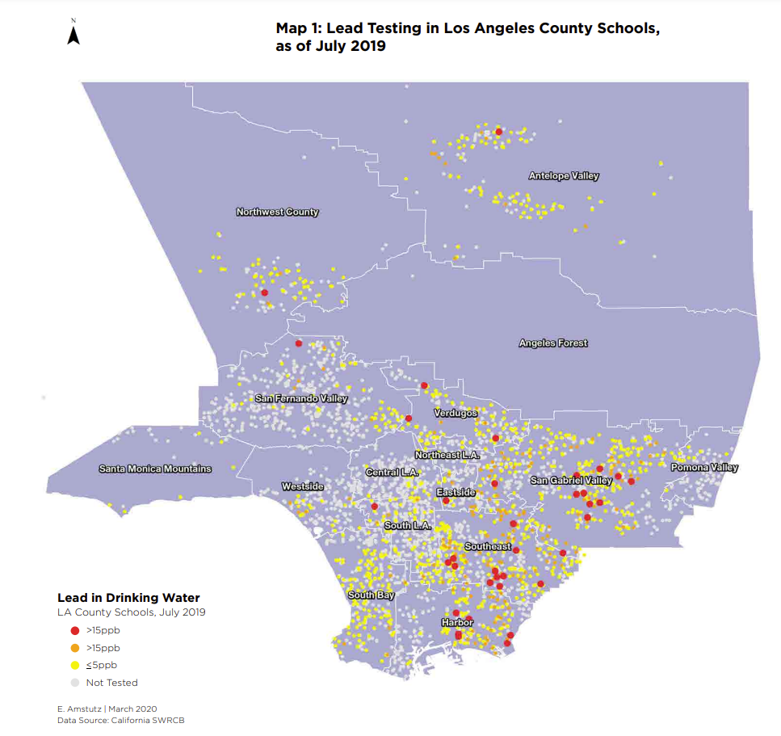
Lead in LA Schools
Reducing Lead in Drinking Water in CA Childcare Facilities Full Report
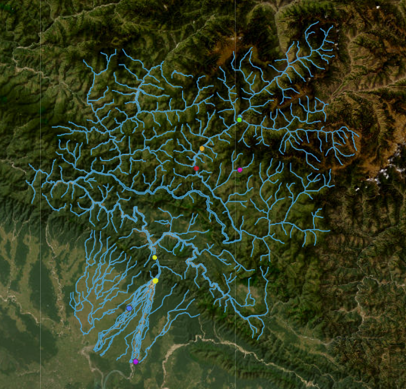
Fish Biodiversity Project
Acquatic Biodiversity Interactive Map
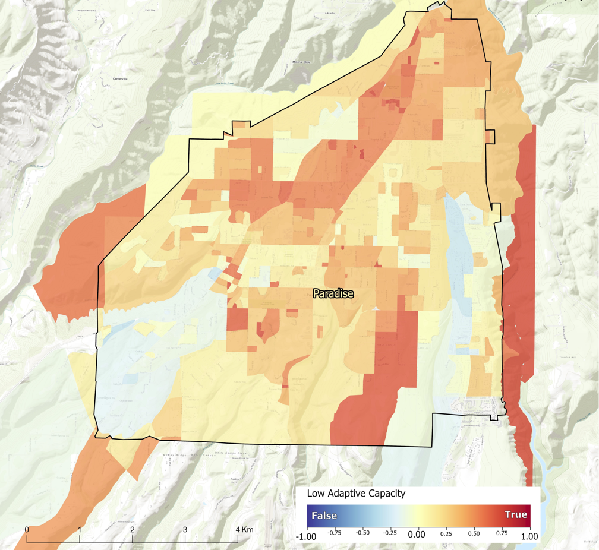
Paradise Wildfire Vulnerability
Sensor Technology for Improved WUI Fire Resilience Project Page
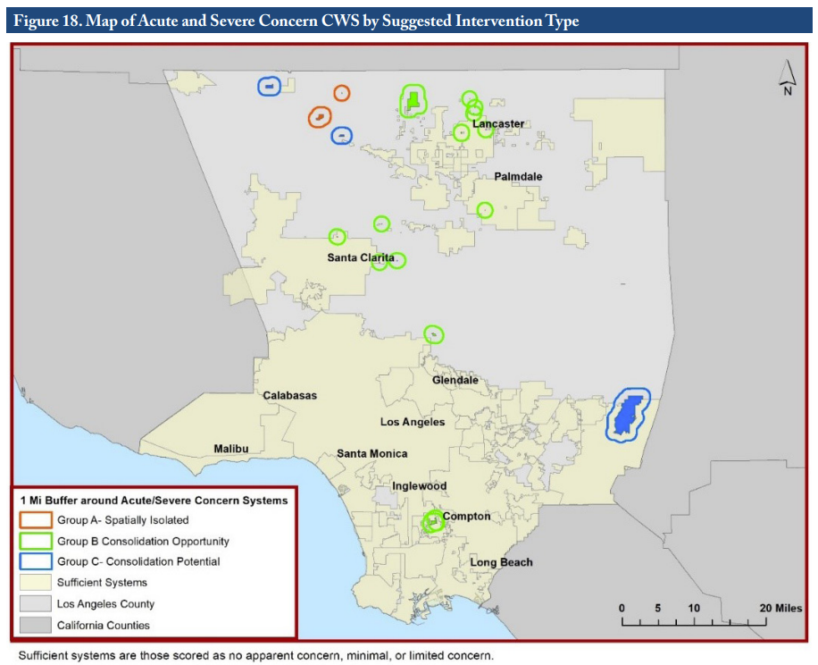
Community Water Systems in LA County
Performance Policy Guide
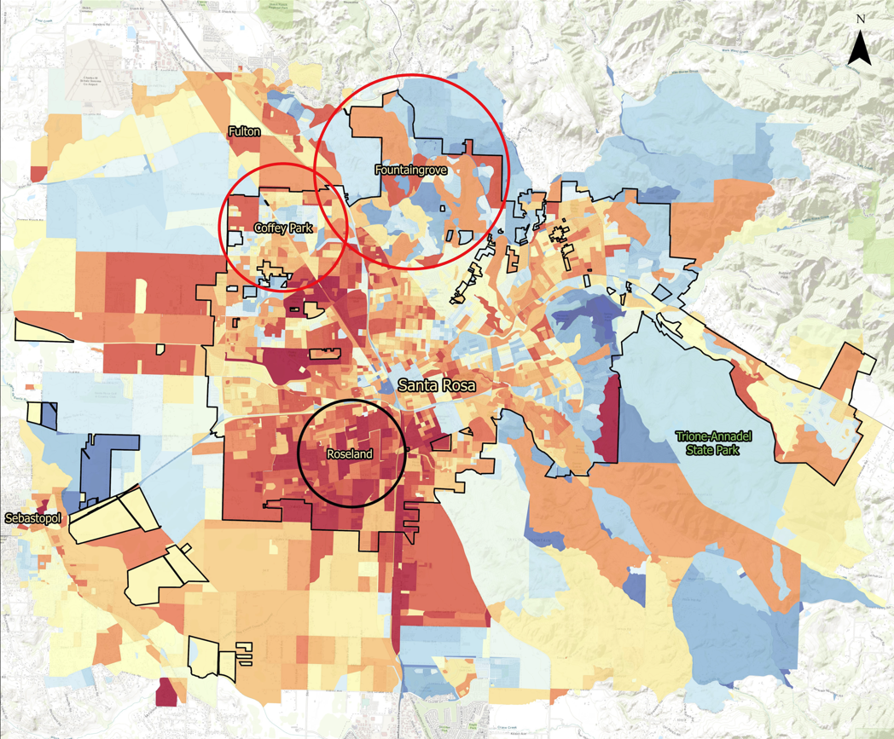
Santa Rosa Wildfire Vulnerability
Sensor Technology for Improved WUI Fire Resilience Project Page
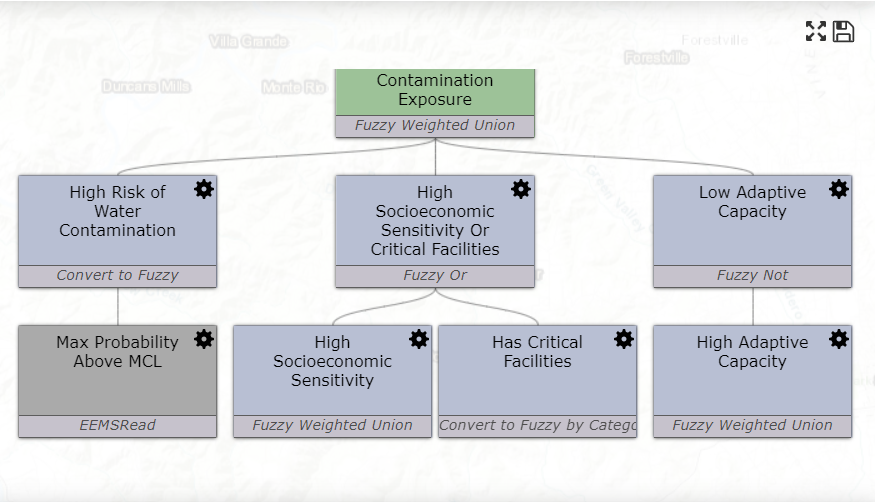
Wildfire Vulnerability Explorer
Interactive Wildfire Vulnerability Explorer
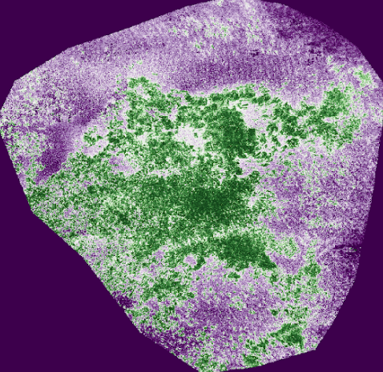
Giant Kelp Change Detection
UAV Giant Kelp Mapping Report
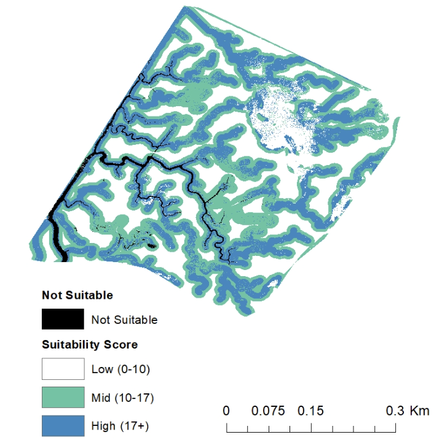
UAV Habitat Suitability Mapping
Least Tern Carpenteria Salt Marsh Report
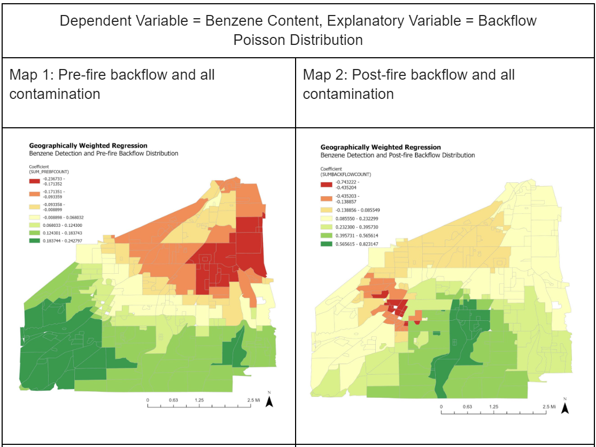
MS Thesis Research: "Drinking Water Security in the WUI: A Comparative Approach to Understand Drivers of Adaptive Drinking Water Systems in Wildland-Urban Interface Communities"
Spatial and Temporal drivers of sensitivity, esposure, and adaptive drinking water systems in Paradise, CA - contact for access
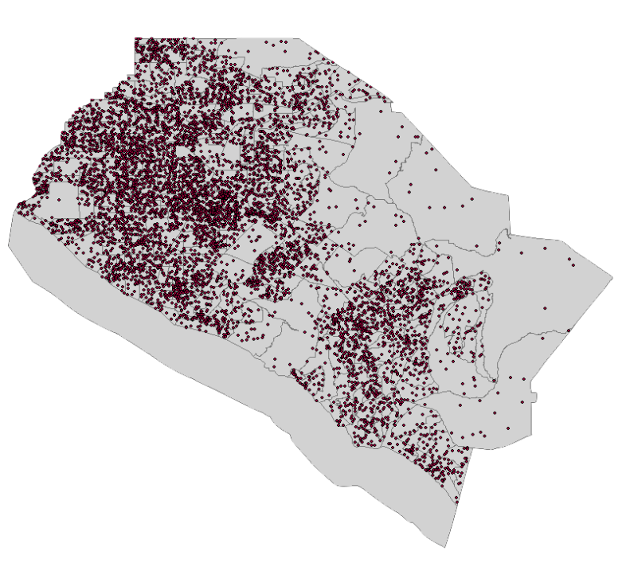
Python Covic-19 Risk Analysis Tool
Tool Development Report
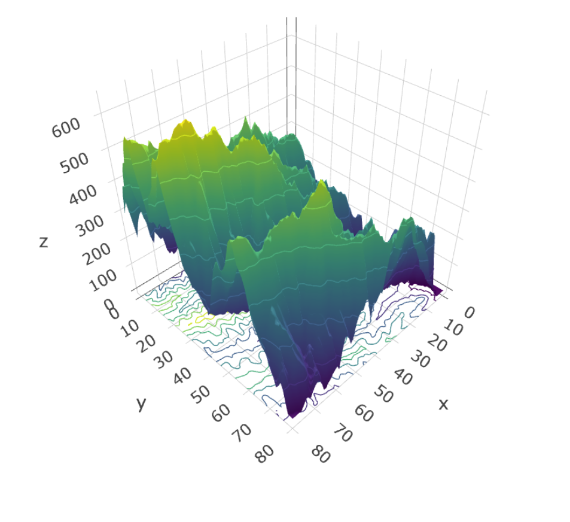
Spatial Statistics: Variograms, 2D and 3D Contour Plots
R Markdown Report
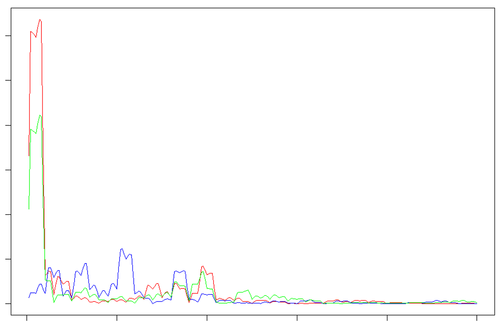
Spatail Statistics: Spectral Analysis
Composite spectral frequency plot of light, soil nitrogen, and species richness
{kind=link}
{kind=link}
{kind=link}
{kind=link}
{kind=link}
{kind=link}
{kind=link}
{kind=link}
{kind=link}
{kind=link}
{kind=link}
{kind=link}